One matrix.
Four bits per weight.
How can we preserve its outputs on typical inputs?

Quantization trades representation error and kernel constraints for capacity. Whether that trade is good depends on the workload.
A smaller model is a proposal, not a result
Our application · synthetic support-ticket routerThe required answer
“I was charged twice for my monthly subscription. Please refund the duplicate.”
Exactly billing, access or bug.
The proposed change
Keep Qwen2.5-0.5B-Instruct. Replace FP16 weights with a bitsandbytes NF4 path.
Will memory, time and answers improve together?
Three things you must do yourself
The assessed coreOne investigation, four turns
Mechanism first · the GPU experiment completes the explanationReconstruct
Preserve the output of one matrix.
Locate the intervention before looking at a histogram
Pinned model architecture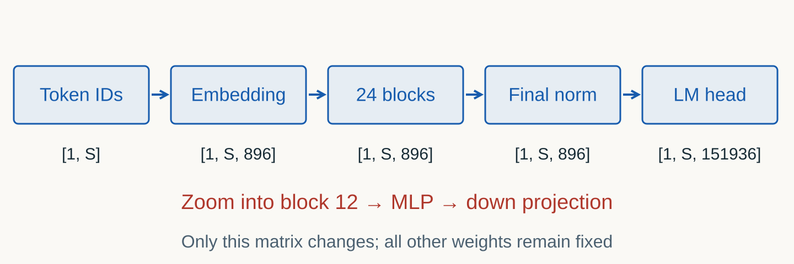
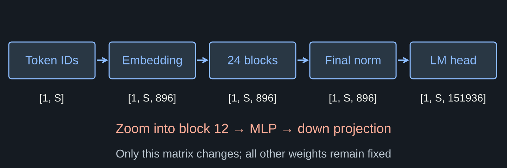
Two residual additions in one decoder block
Qwen2 block · step with →Each of S token positions carries 896 values. Preserve X for the first identity bypass.
This starts a branch. The saved X remains unchanged.
A is the per-head attention output. The branch mixes allowed positions, then projects their features.
Both inputs have shape [1,S,896]. The upper skip edge carries X unchanged.
The second branch and its bypass both start after the first addition.
\(M=\operatorname{down}(\operatorname{SiLU}(g)\odot u)\). Elementwise product; each position uses widths 896, 4864, 896.
The lower skip edge carries \(X_1\). \(X_2\) enters the next separately parameterized block.
The measured matrix is inside a gated MLP
Pinned Qwen MLP architecture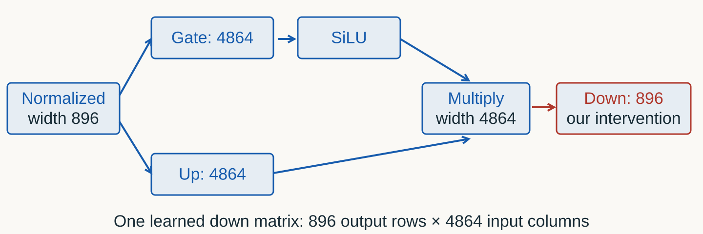
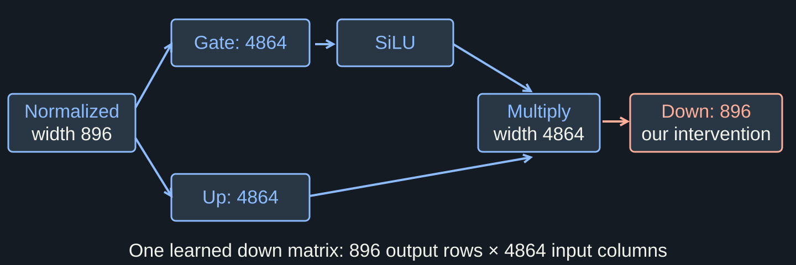
Know which dimension you quantize
One down projection · no biasOne matrix, two output features
Same invented weights throughout the CPU investigationW = [[ .49, .40, .60, 7.00],
[-.30,-.60, .90,-1.40]]
x = [1., 1., 0., 0.]
y = [.89, -.90]Axes are part of the contract
W: [out = 2, in = 4].
Each row dots with four input features.
No bias; no hidden attention axes.
The weight range determines the scale
Worked CPU arithmetic · not model measurementsRounding loses distinctions
Global step 1 · reconstructed minus original| Weight | Code | Restored | Signed error |
|---|---|---|---|
| .49 | 0 | 0 | −.49 |
| .40 | 0 | 0 | −.40 |
| .60 | 1 | 1 | +.40 |
| 7.00 | 7 | 7 | 0 |
One outlier coarsens the entire grid
Diagnostic counterfactual · not permission to delete a weightOriginal matrix
Maximum magnitude: 7.
Scale: 1.
.49 → 0.
If 7 were .70
Maximum magnitude: 1.40.
Scale: .20.
.49 → .40.
One scale maps a distribution onto a few levels
Measured Qwen · CPU FP32 / simulated INT4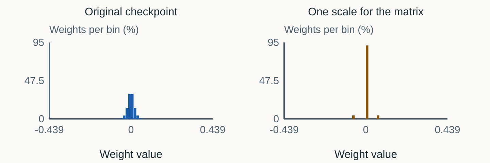
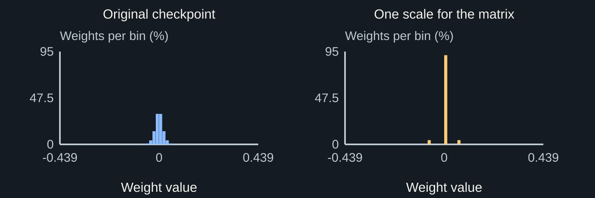
Per-channel means per output row here
W[out,in] · keep the matrix unchanged| Row | Original maximum | Own scale |
|---|---|---|
| 0 | 7 | 1 |
| 1 | 1.40 | .20 |
Groups isolate the outlier
Group size 2 · contiguous pairs inside each row| Group | Scale | Restored pair |
|---|---|---|
| [.49,.40] | .07 | [.49,.42] |
| [.60,7] | 1 | [1,7] |
| [−.30,−.60] | .60 / 7 | [−.342857,−.60] |
| [.90,−1.40] | .20 | [1,−1.40] |
Scale metadata is not free
Eight weights · ideal FP16 scale payload| Granularity | Scales | Code + scale bytes |
|---|---|---|
| One tensor | 1 | 4 + 2 = 6 |
| One per row | 2 | 4 + 4 = 8 |
| Groups of 2 | 4 | 4 + 8 = 12 |
| Groups of 1 | 8 | 4 + 16 = 20 |
Many local scales preserve more of the distribution
Measured Qwen · CPU FP32 / simulated INT4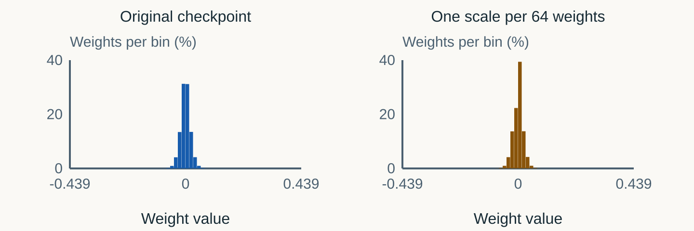
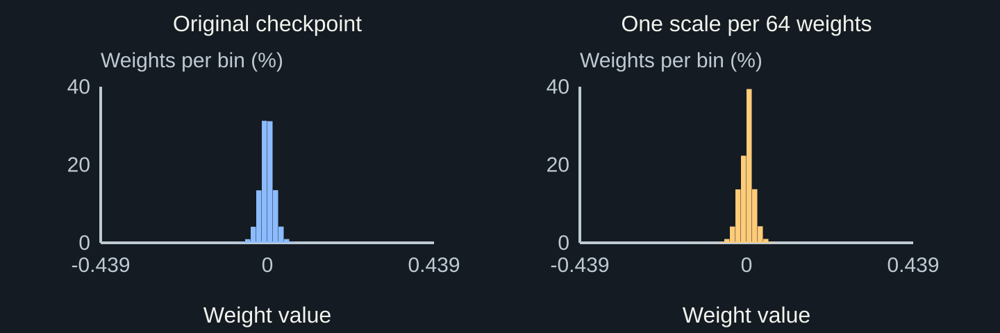
The student's code chooses the groups
Two small functions · no student-written mediandef derive_scale(values):
# TODO: range and zero case
raise NotImplementedError
def quantize_groups(W, size=None):
# TODO: tensor or row-local groups
raise NotImplementedErrorRequired comparison
One tensor → each row → groups 2 → groups 1.
Record scales, bytes and output errors.
Keep the same W and inputs.
Weight error reaches outputs through inputs
Worked CPU arithmetic · not model measurementsThe same weights fail differently
Same inputs · global versus group size 2| Input | Global error | Group-2 error |
|---|---|---|
| [1,1,0,0] | [−.89,−.10] | [+.02,−.042857] |
| [0,1,0,0] | [−.40,−.40] | [+.02,0] |
| [10,0,0,1] | [−4.90,+3.40] | [≈0,−.428571] |
Calibration makes the objective concrete
Inputs choose which output errors matterLiteral calibration input
“A store sells notebooks for 3 dollars each. Maria buys four notebooks and pays with a twenty-dollar bill. Explain how to calculate her change in one short sentence.”
Output preservation
Evaluate reconstructed outputs on representative layer inputs.
Held-out instead asks average train speed. Do not select settings from that result.
Twelve prompts, two distinct populations
Measured Qwen · split fixed before running| Population | Calibration | Held-out |
|---|---|---|
| Prompts | 6 across six domains | 6 new texts, same domains |
| All positions | 414 | 414 |
| User text | 240 · template excluded | 240 · template excluded |
| Domains | All six domains | All six domains |
Each split: math, code, JSON, Russian, support, summary. Exact texts, positions and measurements.
Inspect user-content activations separately from the wrapper
Measured Qwen · user-content-only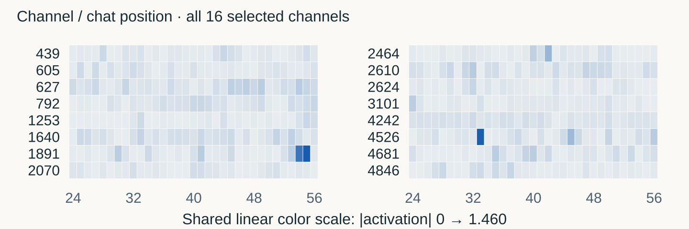
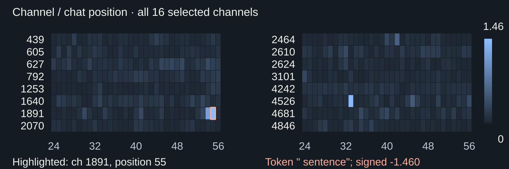
Shared wrapper and user text are different populations
Measured Qwen · calibration only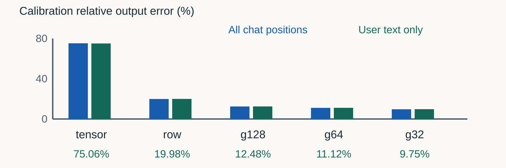
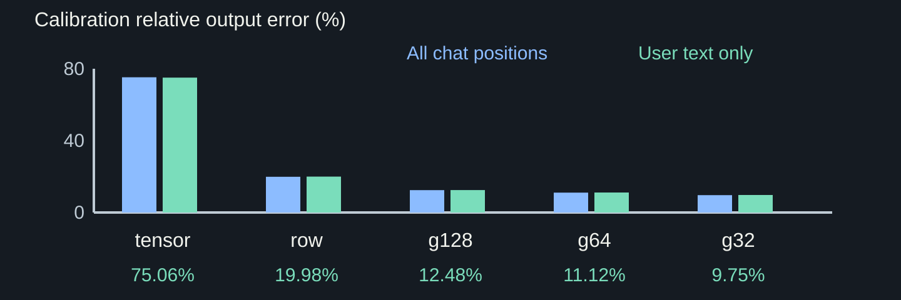
AWQ: equivalent channel rescaling
Worked CPU arithmetic · not model measurementsProtect an active input channel, not the largest weight
Illustrative mechanism · not full AWQ/GPTQ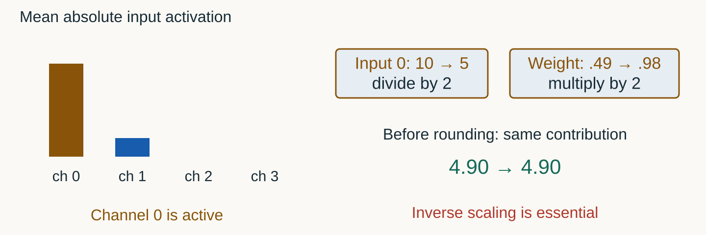
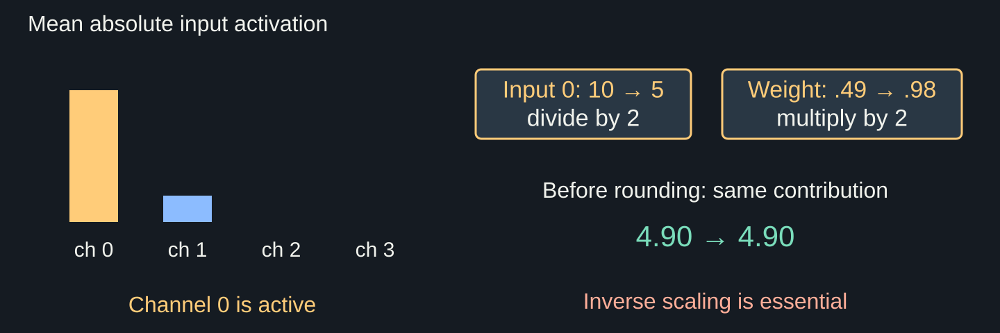
AWQ: rounding now sees .98 instead of .49
Same W · calibration inputs now [10,1,0,0] and [0,1,0,0]Without scaling
.49 → code 0 → weight 0.
At input 10: error −4.90.
Channel multiplier 2
.49 × 2 = .98 → code 1.
Effective weight: 1 / 2 = .50.
At input 10: error +.10.
After rounding, equivalent parameterizations differ
Illustrative mechanism · not full AWQ/GPTQ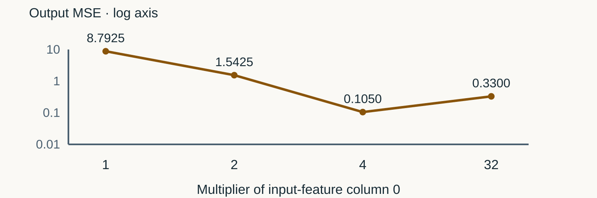
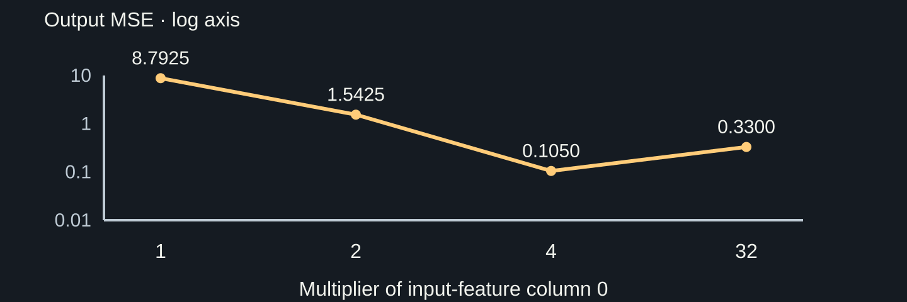
Output-error ellipses prefer a different lattice point
Illustrative mechanism · not full AWQ/GPTQ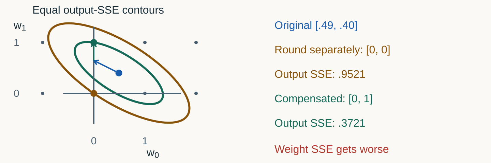
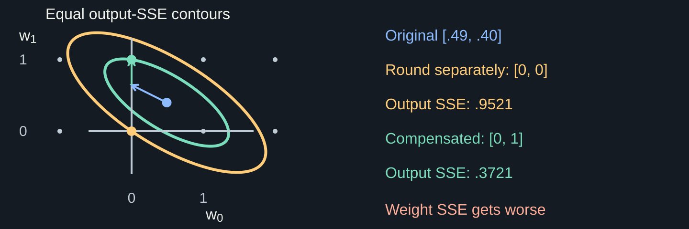
GPTQ: choose the compensation from inputs
Worked CPU arithmetic · not model measurementsBetter outputs can require worse weights
Same two calibration samples · one output row| Quantity | Independent rounding | Compensation |
|---|---|---|
| Final codes | [0,0] | [0,1] |
| Output errors | [−.89,−.40] | [+.11,+.60] |
| Output SSE | .9521 | .3721 |
| Weight SSE | .4001 | .6001 |
Two methods, two interventions
Required explanation before the GPU labAWQ changes what before rounding? GPTQ changes what after one rounding? Why do both need input evidence?
Format, algorithm and execution are different
Do not compare unlike categories| Layer | Question | Examples |
|---|---|---|
| Representation | What do codes mean? | Uniform INT4; NF4 |
| Selection | How choose weights? | RTN; AWQ; GPTQ |
| Execution | How compute? | Packed GPU kernels |
NF4 spends more reconstruction levels near zero
Pinned NF4 codebook · illustrative density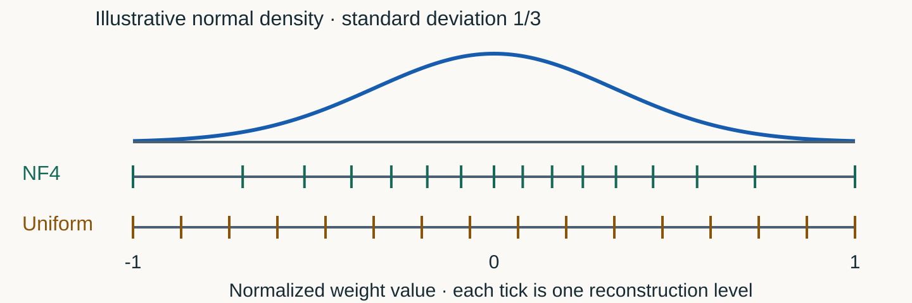
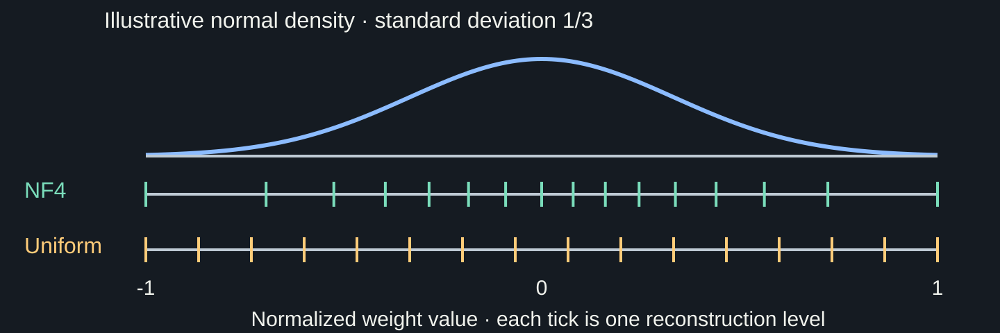
The same NF4 code means different weights in different blocks
Illustrative block normalization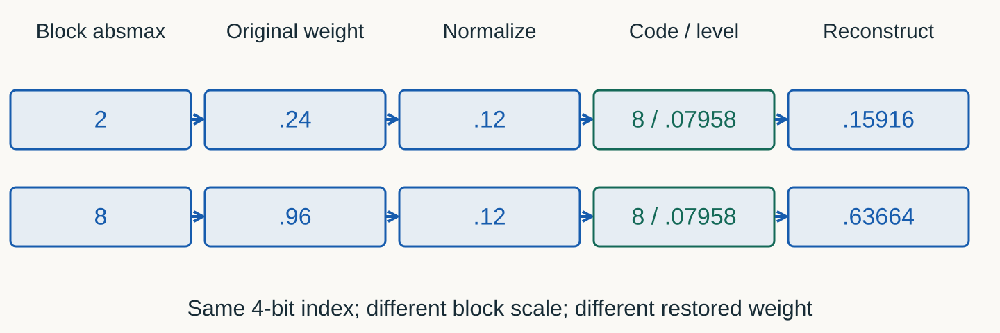
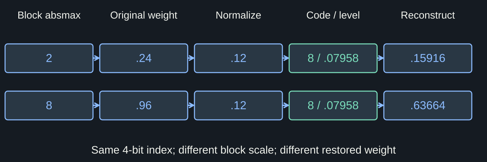
Move the value across the clipping boundary
Interactive · signed integer toySeparate scalar sandbox: full signed range −8…7; supplied scale. Nearest-even ties. Arrow keys move sliders. This uniform toy does not model NF4.
Freeze the choice before held-out
Full Qwen layer · 4.30 ideal bits/weight budget| Group | Calibration user error | Bits per weight |
|---|---|---|
| 128 | 12.48% | 4.125 |
| 64 | 11.12% · selected | 4.250 |
| 32 | 9.75% | 4.500 · over budget |
Frozen group 64 → held-out user error 11.17%. Capture. No claim about task accuracy.
Count
A smaller code is not a fourfold reduction of every allocation.
W4A16 separates storage from arithmetic
Illustrative execution path · actual kernel must be observed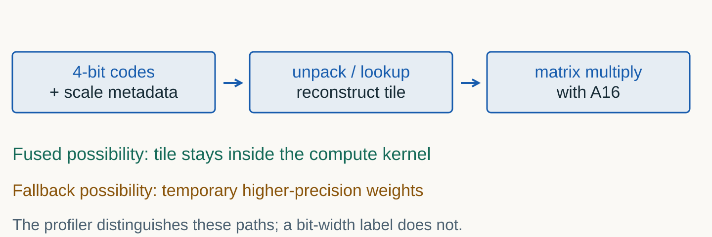
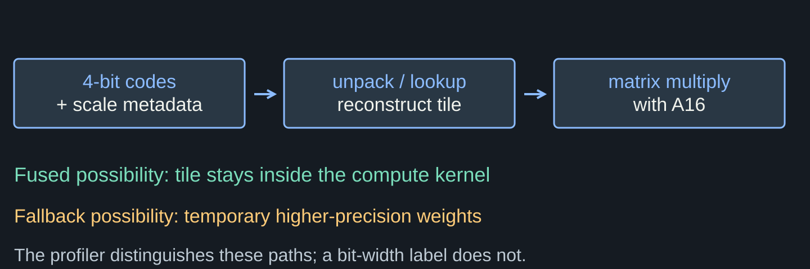
Define the two candidates exactly
Qwen2.5-0.5B-Instruct · same pinned revision| Parameter | FP16 | bitsandbytes NF4 |
|---|---|---|
| Weight storage | FP16 | NF4 · four-bit modules verified |
| Compute | FP16 | FP16 |
| Double quant | Not applicable | Off |
| Input | Same token IDs · batch 1 | Same token IDs · batch 1 |
| Generation | Greedy · SDPA · fixed output count | Same settings and cache policy |
| Runtime | Same GPU, host Torch and package pins | Same GPU, host Torch and package pins |
Estimate payload; measure the allocator
Worked arithmetic · quantities and limitsMove payload and headroom together
Illustrative 3B budget · not the pilot modelBelow 16 bits: codes + FP16 group scales. At 16 bits: BF16 payload, no group scales.
Lower allocated bytes did not lower reserved bytes
Measured 2 October 2026 · same 0.5B GPU smoke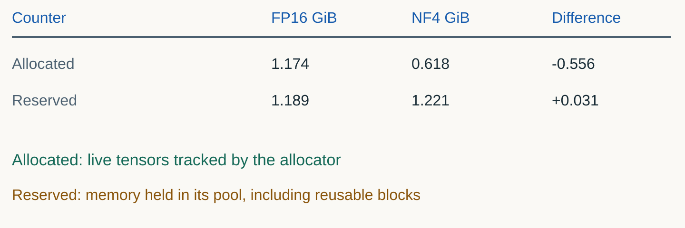
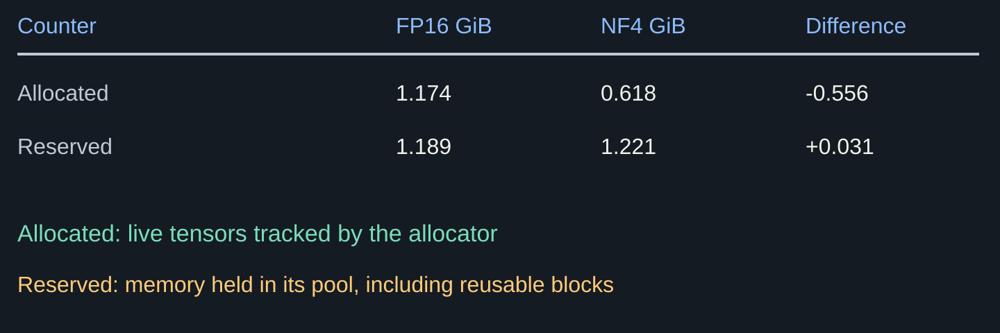
Measure
Keep the work equal and the raw measurements visible.
Use a workload that isolates timing
Literal synthetic prompt · not support-service qualityPrompt
Continue the sequence with comma-separated integers and no explanation: 2, 4, 6,
Same rendered chat and input IDs in both paths.
Force equal work
Exactly 24 selected output IDs, then exactly 96.
Even if a model would naturally stop earlier.
Never score these forced answers as useful tickets.
Change one factor; retain every trial
The pilot measurement matrix| Field | Required setting |
|---|---|
| Formats | FP16 and NF4 · sequential loads |
| Fixed output lengths | 24 and 96 |
| Repeated timings | 5 per length × 2 lengths × 2 formats = 20 |
| Warmup | 1 excluded run for each format and length |
| Order | Alternate length order; record fixed format order |
Do not stop the clock before the GPU finishes
Inspect this boundary in the provided runnertorch.cuda.synchronize()
started = time.perf_counter()
output = model.generate(**fixed)
torch.cuda.synchronize()
seconds = time.perf_counter()-startedIncluded
Generation and host dispatch.
Excluded
Loading, tokenization and input transfer.
Profiler runs separately.
Timing summaries are provided and tested
Seconds in · milliseconds outtest_summary(summarize_seconds)
samples = [.103, .100, .101]
result = summarize_seconds(samples)
# median_ms: 101; minimum_ms: 100
# maximum_ms: 103Check the conversion
For [0.103, 0.100, 0.101] seconds, median = 101 ms.
Test odd and even trial counts.
These are invented test values.
Your workload edit: 24 → 96
Prediction, one change, observationLENGTHS = [24, 24]
# Change only the second value.
check_lengths(LENGTHS)
TRIALS = 5Before running
Will the timing ratio remain the same at 96? Why?
After running
Compare all five raw times at each length, then the summaries.
A profile narrows a question; it is not a verdict
One separate short profile per formatLook for
Operator names, CPU versus device time, and conversion-related work.
Ask whether the suspected path actually appears.
Do not infer
Inclusive operator totals are not disjoint kernel durations.
No device attribution → no kernel explanation.
OOM is a failed run, not “profile unavailable”.
Timing and quality need different outputs
Return to the literal support ticketNatural generation
“I was charged twice for my monthly subscription. Please refund the duplicate.”
Expected label: billing.
Allow EOS; cap 12 output IDs.
Declared parser
Strip only surrounding whitespace.
billing passes.
Billing and billing. fail this exact contract.
Decide
Choose a setting from calibration; test it on new inputs.
Twelve examples are a smoke test, not a benchmark
Four synthetic tickets per class| Check | Question |
|---|---|
| Valid output | Is the exact stripped string one allowed label? |
| Correct output | Does it equal this ticket’s expected label? |
| Paired change | Which specific answers changed between formats? |
| Scope | What failure patterns did twelve invented cases not cover? |
Use the actual result, even if it is inconvenient
Colab T4 · 4 October 2026 MSK · five timing trials per cell| Measured quantity | FP16 | NF4 |
|---|---|---|
| 24-token median | 648.68 ms | 1080.75 ms |
| 96-token median | 2555.15 ms | 4741.07 ms |
| Peak allocated | 963.70–964.54 MiB | 470.96 MiB |
| Peak reserved | 1220 MiB | 1252 MiB |
| Correct tickets | 6 / 12 · 0 invalid | 4 / 12 · 0 invalid |
Submit the action, not just a screenshot
Four artifacts make the decision reviewable| Artifact | Minimum contents |
|---|---|
| Edited notebook | Quantizer, output-error function, distributions; 24 → 96 edit |
| Layer decision JSON | Calibration budget/choice, held-out errors and payload hash |
| Raw GPU JSON | Complete protocol, trials, outputs and cleanup evidence |
| Decision note | Checked prediction, bounded decision and one next test |
Borrow the learning pattern, not the workload size
Core sources and optional continuation- bitsandbytes · actual four-bit layers
- PyTorch · allocator counters and asynchronous work
- MIT EfficientML · controlled changes and negative controls
- CMU Deep Learning Systems · short implementation steps and tests
- GPU Puzzles · small executable exercises
Required: AWQ/GPTQ mechanisms. Optional: full implementations, FP8 and custom kernels.

The smaller representation must still satisfy the task. Keep the evidence that explains your choice.
Now serve the candidate.
Topic 04: start one vLLM process and verify its HTTP behavior. Quantization evidence is an input, not a substitute for a service test.